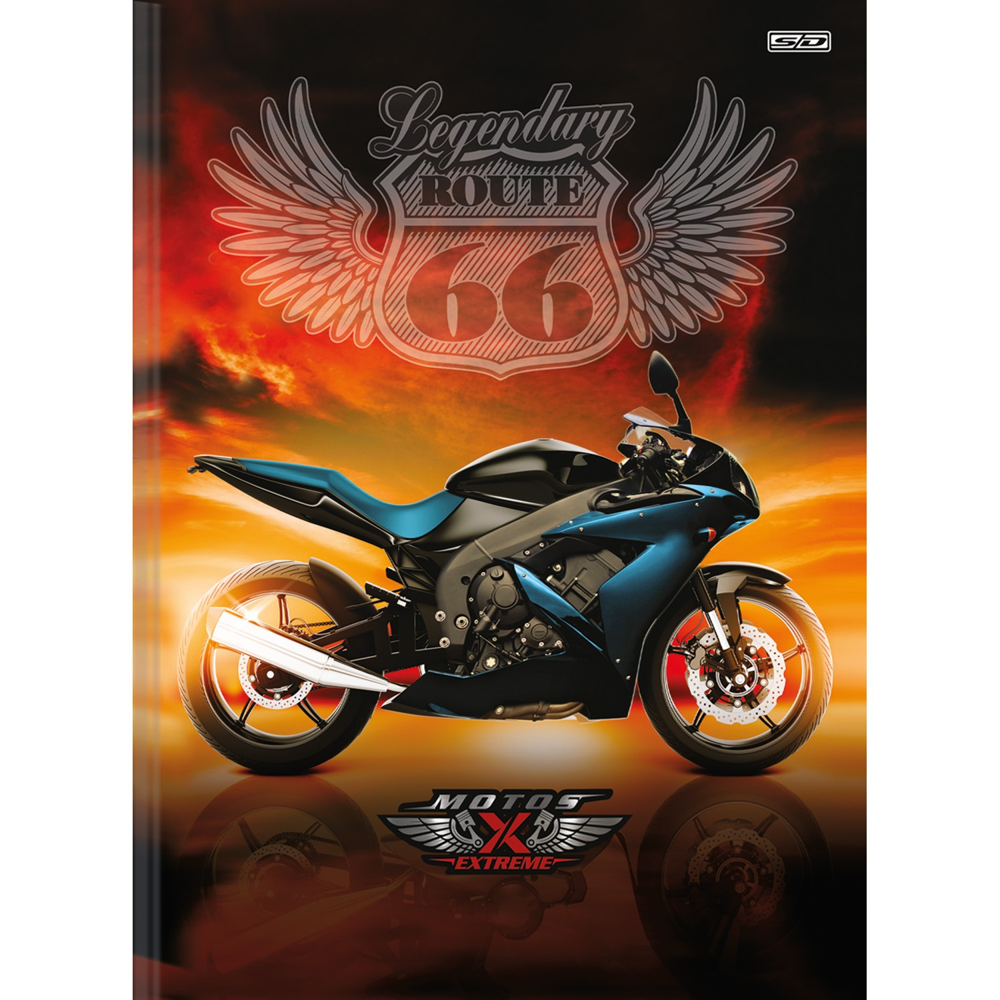

Motociclo ou motocicleta (também conhecida simplesmente por motoca, moto ou ainda mota), é um veículo motorizado de duas rodas e tracção traseira e salvo raras excepções, capaz de desenvolver velocidade de cruzeiro com segurança e conforto.
Todas as motos têm um motor que converte o movimento alternado dos pistões em movimento rotativo (assim como o motor de um carro). A transmissão, como o próprio nome já diz, é quem transmite o envio do movimento alternado dos pistões para a roda traseira
